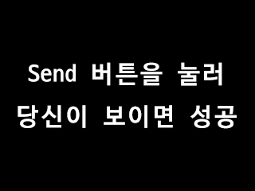

웹 소켓 테스트
- 사용자(크롬) 웹 캠 비디오 프레임을 웹소켓 서버(파이썬)로 전송한다. (image/jpeg, base64)
- 서버(파이썬)는 받은 비디오 프레임 한장 한장을 mediapipe(포즈 추적 라이브러리)로 포즈를 추적한다.
- 서버(파이썬)는 추적된 포즈를 다시 사용자(크롬)에게 전송한다. (image/jpeg, base64)
- 사용자(크롬)는 받은 포즈 추적 결과를 화면에 출력한다.
파이썬(백엔드)에서 보내온 화면 (테스트용)

파이썬에서 보내온 점수 (Send 누르기전에는 안보냄)
현재 상태
지금 서버에 연결 중일 겁니다.
웹 소켓 서버에 한번이라도 연결한 클라이언트 목록